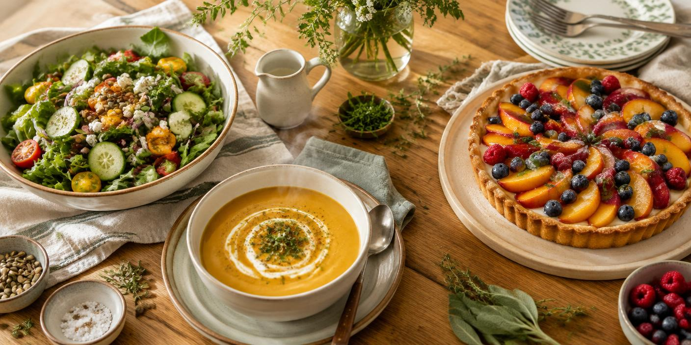
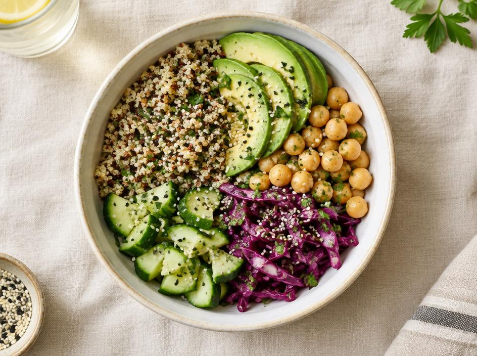
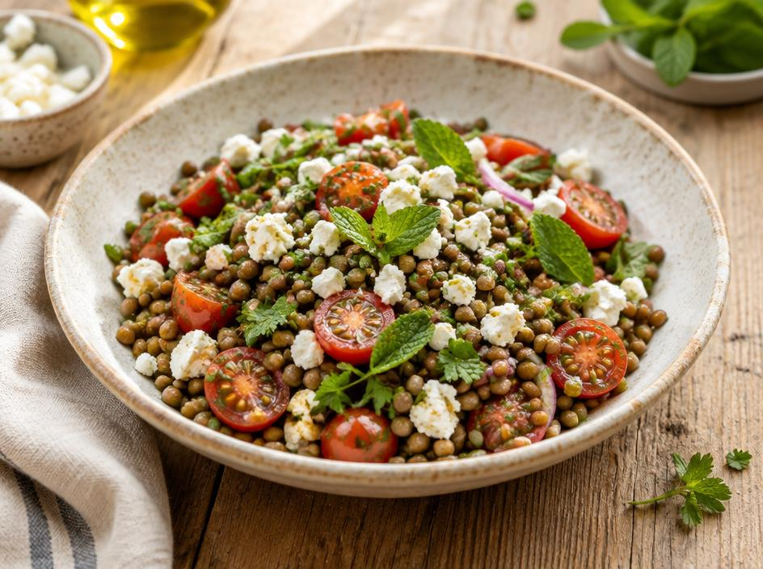
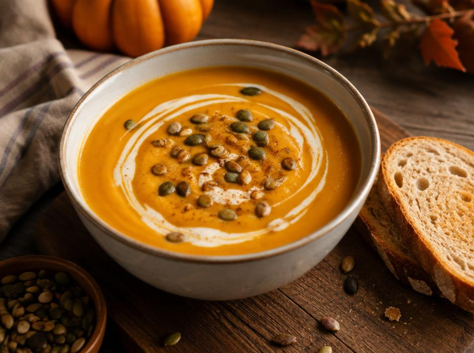
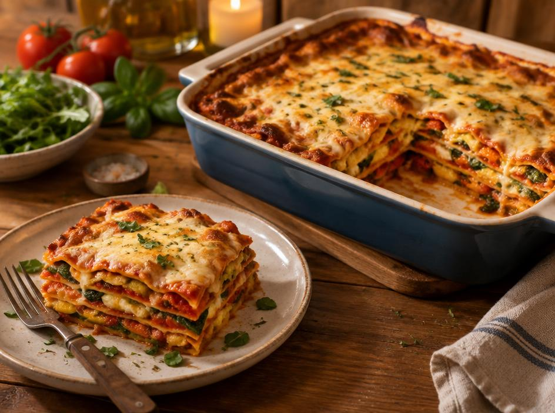
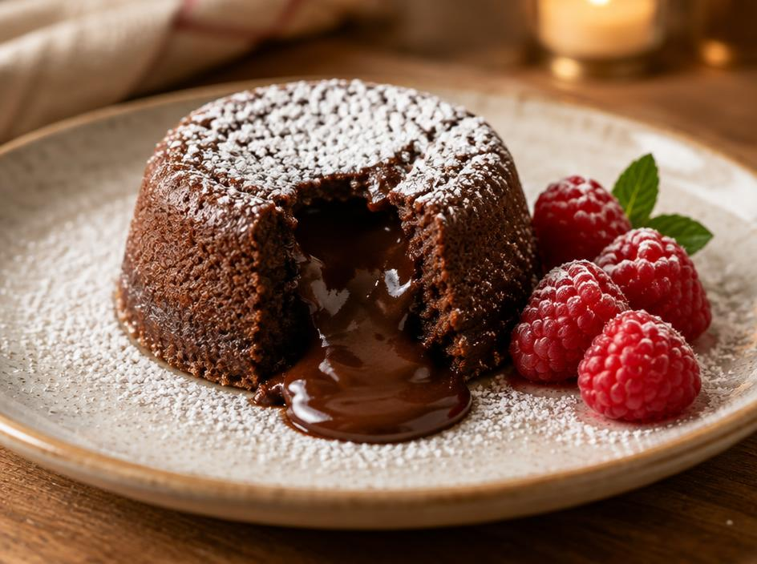
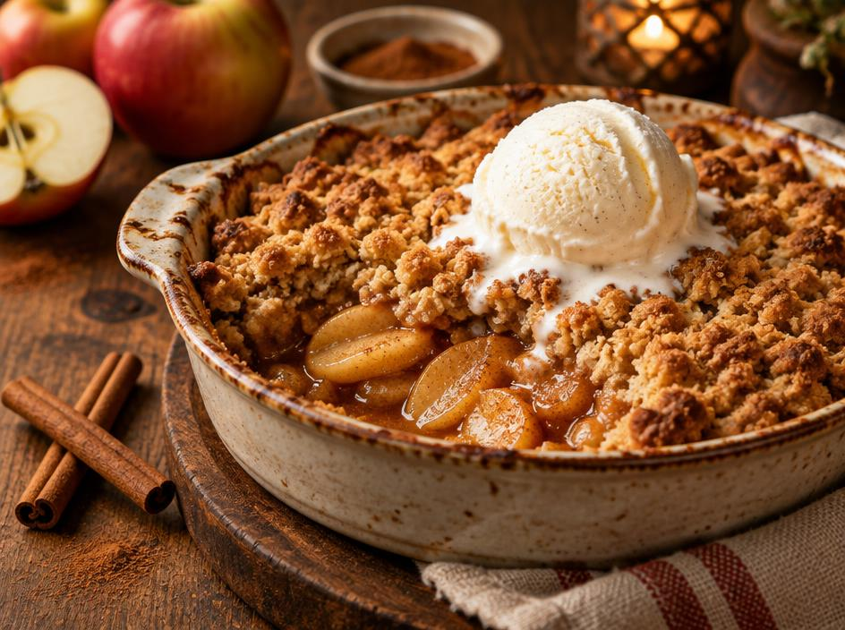

Recettes maison
Des recettes simples pour manger sainement, se réchauffer le cœur et se faire plaisir avec une touche sucrée.
Des assiettes colorées, rapides et équilibrées pour faire le plein d'énergie.

Quinoa, pois chiches rôtis, chou rouge, concombre et avocat, sauce citron-sésame.

Lentilles vertes, tomates cerises, feta émiettée et menthe fraîche.
Des plats chauds et généreux pour les soirées fraîches.

Un velouté doux au lait de coco, graines de courge grillées et pain de campagne.

Courgettes, épinards et poivrons rôtis, sauce tomate maison et fromage gratiné.
Pour finir le repas sur une note douce.

Un cœur fondant, une pointe de sucre glace et quelques framboises fraîches.

Pommes caramélisées, pâte croustillante à l'avoine et une boule de glace vanille.